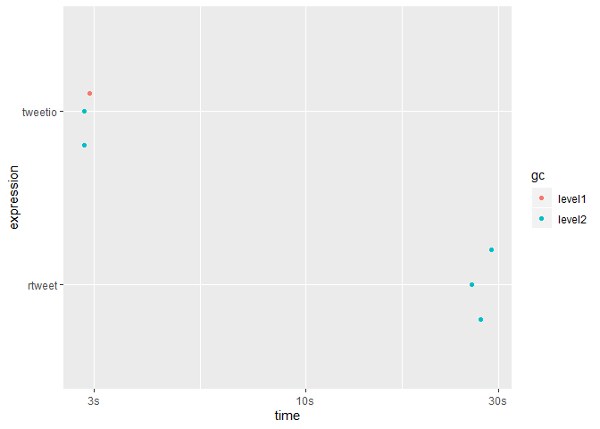

Progress
Supported Data Inputs
- Twitter API streams: .json, .json.gz
- API to Elasticsearch data dump (JSON Array): .json, .json.gz
- API to Elasticsearch data dump (line-delimited JSON): .jsonl, .jsonl.gz
-
CSV (if written via
tweetio::write_tweet_csv())
Supported Data Outputs
- CSV
- Excel
-
.graphml (currently available in
{tweetgraph})
Extras
-
Spatial Tweets via
tweetio::as_tweet_sf()
Introduction
{tweetio} (mainly) focuses on one thing: going from raw tweets to {rtweet}-style data frames and other useful structures) as quickly as possible. Whether the data came from the Twitter API, a database dump, or some other source, {tweetio}’s job is to get them into R.
{tweetio} is not a competitor to {rtweet}; it is not interested in collecting Twitter data. That said, it definitely attempts to emulate its data frame schema because…
- It’s incredibly easy to use.
- It’s more efficient to analyze than a key-value format following the raw data.
- It’d be a waste not to maximize compatibiltiy with tools built specifically around
{rtweet}’s data frames.
Installation
You’ll need a C++ compiler. If you’re using Windows, you’ll need Rtools.
You probably want to follow the page’s advice and select the recommended version, which is currently Rtools35.exe. When you’re installing Rtools, you need to make sure you check the box stating “Add rtools to system PATH” and reboot when you’re finished.
Once you’re done, reboot. Then you can install {tweetio}.
Usage
Simple Example
First, we’ll save a stream of tweets using rtweet::stream_tweets().
temp_file <- tempfile(fileext = ".json")
rtweet::stream_tweets(timeout = 15, parse = FALSE, file_name = temp_file)We can then pass the file path to tweetio::read_tweets() to efficiently parse the data into an {rtweet}-style data frame.
library(tweetio)
small_rtweet_stream <- read_tweets(temp_file)
tibble::as_tibble(small_rtweet_stream)#> # A tibble: 599 x 90
#> user_id status_id created_at screen_name text source reply_to_status~ reply_to_user_id
#> <chr> <chr> <dttm> <chr> <chr> <chr> <chr> <chr>
#> 1 954058~ 11962617~ 2019-11-18 03:00:11 bmuukt_ <U+0E41><U+0E21><U+0E48><U+0E08>~ Twitt~ <NA> <NA>
#> 2 252410~ 11962617~ 2019-11-18 03:00:11 Biancaraaa Imbi~ Twitt~ <NA> <NA>
#> 3 282568~ 11962617~ 2019-11-18 03:00:11 loran_moon <U+4ECA><U+65E5><U+306E><U+663C>~ twitt~ <NA> <NA>
#> 4 917758~ 11962617~ 2019-11-18 03:00:11 _galaxy18 RT @~ Twitt~ <NA> <NA>
#> 5 108389~ 11962617~ 2019-11-18 03:00:11 kiiroimaim~ @min~ Twitt~ 119626158955013~ 962592071126155~
#> 6 105991~ 11962617~ 2019-11-18 03:00:11 gilloidbot "\"(~ twitt~ <NA> <NA>
#> 7 481937~ 11962617~ 2019-11-18 03:00:11 otoma100HP <U+3057><U+3087><U+3063><U+3061>~ Tweet~ <NA> <NA>
#> 8 984574~ 11962617~ 2019-11-18 03:00:11 zirah__ RT @~ Twitt~ <NA> <NA>
#> 9 119295~ 11962617~ 2019-11-18 03:00:11 NomNomKu @edc~ Twitt~ 119621290997140~ 777931862
#> 10 107273~ 11962617~ 2019-11-18 03:00:11 jyxdefsoul <U+0E2D><U+0E48><U+0E30> ~ Twitt~ <NA> <NA>
#> # ... with 589 more rows, and 82 more variables: reply_to_screen_name <chr>, is_quote <lgl>,
#> # is_retweet <lgl>, hashtags <list>, urls_expanded_url <list>, media_url <list>,
#> # media_expanded_url <list>, media_type <list>, mentions_user_id <list>,
#> # mentions_screen_name <list>, quoted_status_id <chr>, quoted_text <chr>,
#> # quoted_created_at <dttm>, quoted_source <chr>, quoted_favorite_count <int>,
#> # quoted_retweet_count <int>, quoted_user_id <chr>, quoted_screen_name <chr>, quoted_name <chr>,
#> # quoted_followers_count <int>, quoted_friends_count <int>, quoted_statuses_count <int>,
#> # quoted_location <chr>, quoted_description <chr>, quoted_verified <lgl>,
#> # retweet_status_id <chr>, retweet_text <chr>, retweet_created_at <dttm>, retweet_source <chr>,
#> # retweet_favorite_count <int>, retweet_retweet_count <int>, retweet_user_id <chr>,
#> # retweet_screen_name <chr>, retweet_name <chr>, retweet_followers_count <int>,
#> # retweet_friends_count <int>, retweet_statuses_count <int>, retweet_location <chr>,
#> # retweet_description <chr>, retweet_verified <lgl>, place_url <chr>, place_name <chr>,
#> # place_full_name <chr>, place_type <chr>, country <chr>, country_code <chr>, bbox_coords <list>,
#> # status_url <chr>, name <chr>, location <chr>, description <chr>, url <chr>, protected <lgl>,
#> # followers_count <int>, friends_count <int>, listed_count <int>, statuses_count <int>,
#> # favourites_count <int>, account_created_at <dttm>, verified <lgl>, profile_url <chr>,
#> # account_lang <chr>, profile_banner_url <chr>, profile_image_url <chr>, is_retweeted <lgl>,
#> # retweet_place_url <chr>, retweet_place_name <chr>, retweet_place_full_name <chr>,
#> # retweet_place_type <chr>, retweet_country <chr>, retweet_country_code <chr>,
#> # retweet_bbox_coords <list>, quoted_place_url <chr>, quoted_place_name <chr>,
#> # quoted_place_full_name <chr>, quoted_place_type <chr>, quoted_country <chr>,
#> # quoted_country_code <chr>, quoted_bbox_coords <list>, timestamp_ms <dttm>,
#> # contributors_enabled <lgl>, profile_url2 <chr>Scaling Up
We’re more interested in handling much larger data sets, but for demonstration we’ll use a file of a reasonable size that was obtained using rtweet::stream_tweets().
rtweet_stream_path <- system.file("example-data/api-stream.json.gz", package = "tweetio")
scales::number_bytes(file.size(rtweet_stream_path))Before compression, the file was about 153 Mb.
Unfortunately, rtweet::parse_stream() may fail parsing streams because the data returned may not be valid JSON.
#> Error: parse error: after array element, I expect ',' or ']'
#> 736405012481"},"timestamp_ms":"1569693801061"}}{"created_at"
#> (right here) ------^The only way around this is to read the entire file into memory and run some validation routine before parsing, which looks something like this…
rtweet_validate_and_parse <- function(source_file_path, target_file_path) {
raw_lines <- readLines(source_file_path)
valid_lines <- raw_lines[vapply(raw_lines, jsonify::validate_json, logical(1L))]
writeLines(valid_lines, target_file_path)
rtweet::parse_stream(target_file_path)
}
rtweet_stream_path2 <- tempfile(fileext = ".json")
rtweet_validate_and_parse(source_file_path = rtweet_stream_path,
target_file_path = rtweet_stream_path2)#> # A tibble: 12,824 x 90
#> user_id status_id created_at screen_name text source display_text_wi~ reply_to_status~
#> <chr> <chr> <dttm> <chr> <chr> <chr> <dbl> <chr>
#> 1 807195~ 11780078~ 2019-09-28 18:05:23 ykaoi0327 "<U+4EE5><U+4E0A><U+3067>~ Twitt~ NA <NA>
#> 2 114393~ 11780078~ 2019-09-28 18:05:23 yowasugi723 "@Di~ Twitt~ 9 117771450591824~
#> 3 247059~ 11780078~ 2019-09-28 18:05:23 itsauroras~ "“So~ Twitt~ NA <NA>
#> 4 822602~ 11780078~ 2019-09-28 18:05:23 Darrell894~ It's~ Twitt~ NA <NA>
#> 5 797200~ 11780078~ 2019-09-28 18:05:23 NastyWoman~ @Bra~ Twitt~ 69 117796816033668~
#> 6 110779~ 11780078~ 2019-09-28 18:05:23 DeshaunAwe~ met ~ twitt~ NA <NA>
#> 7 110441~ 11780078~ 2019-09-28 18:05:23 diamondy_u "<U+2728>Lo~ Twitt~ NA <NA>
#> 8 359294~ 11780078~ 2019-09-28 18:05:23 piyakat28 "Saf~ Twitt~ NA <NA>
#> 9 194250~ 11780078~ 2019-09-28 18:05:23 Stgo_centro Me d~ Twitt~ NA <NA>
#> 10 116013~ 11780078~ 2019-09-28 18:05:23 119lonwi_y~ <U+D55C><U+AD6D><U+C5D0><U+C11C>~ Twitt~ NA <NA>
#> # ... with 12,814 more rows, and 82 more variables: reply_to_user_id <chr>,
#> # reply_to_screen_name <chr>, is_quote <lgl>, is_retweet <lgl>, favorite_count <int>,
#> # retweet_count <int>, quote_count <int>, reply_count <int>, hashtags <list>, symbols <list>,
#> # urls_url <list>, urls_t.co <list>, urls_expanded_url <list>, media_url <list>,
#> # media_t.co <list>, media_expanded_url <list>, media_type <list>, ext_media_url <list>,
#> # ext_media_t.co <list>, ext_media_expanded_url <list>, ext_media_type <chr>,
#> # mentions_user_id <list>, mentions_screen_name <list>, lang <chr>, quoted_status_id <chr>,
#> # quoted_text <chr>, quoted_created_at <dttm>, quoted_source <chr>, quoted_favorite_count <int>,
#> # quoted_retweet_count <int>, quoted_user_id <chr>, quoted_screen_name <chr>, quoted_name <chr>,
#> # quoted_followers_count <int>, quoted_friends_count <int>, quoted_statuses_count <int>,
#> # quoted_location <chr>, quoted_description <chr>, quoted_verified <lgl>,
#> # retweet_status_id <chr>, retweet_text <chr>, retweet_created_at <dttm>, retweet_source <chr>,
#> # retweet_favorite_count <int>, retweet_retweet_count <int>, retweet_user_id <chr>,
#> # retweet_screen_name <chr>, retweet_name <chr>, retweet_followers_count <int>,
#> # retweet_friends_count <int>, retweet_statuses_count <int>, retweet_location <chr>,
#> # retweet_description <chr>, retweet_verified <lgl>, place_url <chr>, place_name <chr>,
#> # place_full_name <chr>, place_type <chr>, country <chr>, country_code <chr>, geo_coords <list>,
#> # coords_coords <list>, bbox_coords <list>, status_url <chr>, name <chr>, location <chr>,
#> # description <chr>, url <chr>, protected <lgl>, followers_count <int>, friends_count <int>,
#> # listed_count <int>, statuses_count <int>, favourites_count <int>, account_created_at <dttm>,
#> # verified <lgl>, profile_url <chr>, profile_expanded_url <chr>, account_lang <lgl>,
#> # profile_banner_url <chr>, profile_background_url <chr>, profile_image_url <chr>Fortunately, {tweetio} can handle these situations by validating the JSON before it gets anywhere near R.
#> # A tibble: 1 x 6
#> expression min median `itr/sec` mem_alloc `gc/sec`
#> <bch:expr> <bch:tm> <bch:tm> <dbl> <bch:byt> <dbl>
#> 1 read_tweets(rtweet_stream_path) 5.18s 5.31s 0.189 220MB 0.818Ignoring the time it takes to run the above rtweet_validate_and_parse() function for rtweet::parse_stream() to work, how much faster is tweetio::read_tweets()?
bench_mark <- bench::mark(
rtweet = rtweet::parse_stream(rtweet_stream_path2),
tweetio = tweetio::read_tweets(rtweet_stream_path2),
check = FALSE,
min_iterations = 3,
filter_gc = FALSE
)
bench_mark[, 1:9]#> # A tibble: 2 x 6
#> expression min median `itr/sec` mem_alloc `gc/sec`
#> <bch:expr> <bch:tm> <bch:tm> <dbl> <bch:byt> <dbl>
#> 1 rtweet 26.61s 28.15s 0.0359 476MB 4.96
#> 2 tweetio 4.43s 5.53s 0.193 174MB 0.644
With bigger files, using rtweet::parse_stream() is no longer realistic, but that’s where tweetio::read_tweets() can help.
Spatial Tweets
Tweet JSON contains an object called "place" that is set aside for location information. If present, it looks something like the following.
{
"text": "#rstats4lyfe",
"place": {
"id": "00d546b224a6764d",
"url": "https://api.twitter.com/1.1/geo/id/blahblah.json",
"place_type": "city",
"name": "General Pico",
"full_name": "General Pico, Argentina",
"country_code": "AR",
"country": "Argentina",
"bounding_box": {
"type": "Polygon",
"coordinates": [
[
[
-63.784544,
-35.689402
],
[
-63.784544,
-35.641737
],
[
-63.724717,
-35.641737
],
[
-63.724717,
-35.689402
]
]
]
},
"attributes": {}
}
}In {rtweet}-style data frames, this corresponds to the bbox_coords column.
If you have {sf} installed, you can use as_tweet_sf() to filter the tweets for those that contain valid coordinates and build their bounding box polygons.
#> Simple feature collection with 2215 features and 0 fields
#> geometry type: POLYGON
#> dimension: XY
#> bbox: xmin: -179.2311 ymin: -50.35726 xmax: 179.8597 ymax: 71.43436
#> epsg (SRID): 4326
#> proj4string: +proj=longlat +datum=WGS84 +no_defs
#> First 10 features:
#> bbox_coords
#> 1 POLYGON ((-90.23761 29.9683...
#> 2 POLYGON ((-80.20811 26.0809...
#> 3 POLYGON ((17.08005 59.73069...
#> 4 POLYGON ((-80.51985 39.7198...
#> 5 POLYGON ((-80.34364 25.5991...
#> 6 POLYGON ((-118.6684 33.7045...
#> 7 POLYGON ((-122.0662 37.9242...
#> 8 POLYGON ((-118.4485 33.9768...
#> 9 POLYGON ((-97.66262 27.5785...
#> 10 POLYGON ((-118.6684 33.7045...There are currently three columns that can potentially hold bounding boxes:
bbox_coordsquoted_bbox_coordsretweet_bbox_coords
You can select which one to use to build your sf object by modifying the geom_col= parameter (default: "bbox_coords")
#> Simple feature collection with 1254 features and 0 fields
#> geometry type: POLYGON
#> dimension: XY
#> bbox: xmin: -124.849 ymin: -27.76744 xmax: 153.3179 ymax: 60.29791
#> epsg (SRID): 4326
#> proj4string: +proj=longlat +datum=WGS84 +no_defs
#> First 10 features:
#> quoted_bbox_coords
#> 1 POLYGON ((-73.99354 40.7507...
#> 2 POLYGON ((-73.99354 40.7507...
#> 3 POLYGON ((-73.99354 40.7507...
#> 4 POLYGON ((-73.99354 40.7507...
#> 5 POLYGON ((-73.99354 40.7507...
#> 6 POLYGON ((-73.99354 40.7507...
#> 7 POLYGON ((-73.99354 40.7507...
#> 8 POLYGON ((-73.99354 40.7507...
#> 9 POLYGON ((-73.99354 40.7507...
#> 10 POLYGON ((-73.99354 40.7507...You can also build all the supported bounding boxes by setting geom_col= to "all".
#> Simple feature collection with 7441 features and 1 field
#> geometry type: POLYGON
#> dimension: XY
#> bbox: xmin: -179.2311 ymin: -50.35726 xmax: 179.8597 ymax: 71.43436
#> epsg (SRID): 4326
#> proj4string: +proj=longlat +datum=WGS84 +no_defs
#> First 10 features:
#> geometry which_geom
#> 1 POLYGON ((-90.23761 29.9683... bbox_coords
#> 2 POLYGON ((-80.20811 26.0809... bbox_coords
#> 3 POLYGON ((17.08005 59.73069... bbox_coords
#> 4 POLYGON ((-80.51985 39.7198... bbox_coords
#> 5 POLYGON ((-80.34364 25.5991... bbox_coords
#> 6 POLYGON ((-118.6684 33.7045... bbox_coords
#> 7 POLYGON ((-122.0662 37.9242... bbox_coords
#> 8 POLYGON ((-118.4485 33.9768... bbox_coords
#> 9 POLYGON ((-97.66262 27.5785... bbox_coords
#> 10 POLYGON ((-118.6684 33.7045... bbox_coordsFrom there, you can easily use the data like any other {sf} object.
library(ggplot2)
world <- rnaturalearth::ne_countries(returnclass = "sf")
world <- world[world$continent != "Antarctica", ]
sf_for_gg <- sf::st_wrap_dateline(all_bboxes)
ggplot(sf_for_gg) +
geom_sf(fill = "white", color = "lightgray", data = world) +
geom_sf(aes(fill = which_geom, color = which_geom), alpha = 0.15, size = 1, show.legend = TRUE) +
coord_sf(crs = 3857) +
scale_fill_viridis_d() +
scale_color_viridis_d() +
theme(legend.title = element_blank(), legend.position = "top",
panel.background = element_rect(fill = "#daf3ff"))
Can we go faster?
Until Rtools 4.0 hits (or the simdjson library decides to relax its C++17 requirement), I’m not sure how we can go much faster while maintaining cross-platform compatibility. That said, contibutions are welcome, especially if C++ is your mother tongue.
Acknowledgements
{tweetio} uses a combination of C++ via {Rcpp}, the rapidjson C++ library (made available by {rapidjsonr}), {jsonify}) for an R-level interface to rapidjson, {RcppProgress}), and R’s secret weapon: {data.table}.
Major inspiration from {ndjson} was taken, particularly its use of Gzstream.